Home / Past papers / MLT Quiz 2 / this paper
2024 Aug04: IIT M AN EXAM QDD4 - 04 Aug 2024
Elapsed 00:00
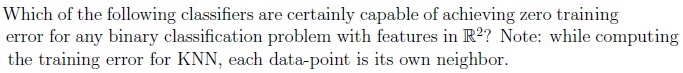
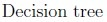
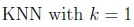
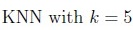
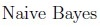
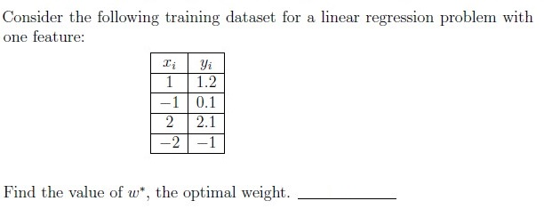
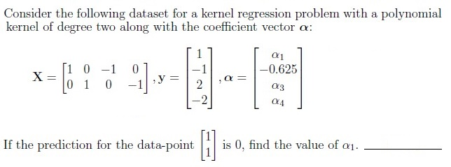
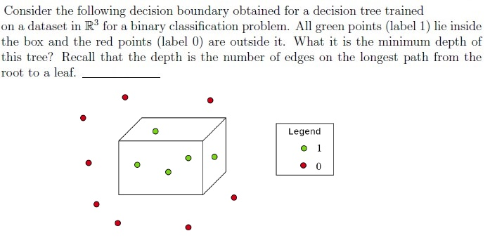
Comprehension passage - the questions below it refer to this
Based on the above data, answer the given subquestions.
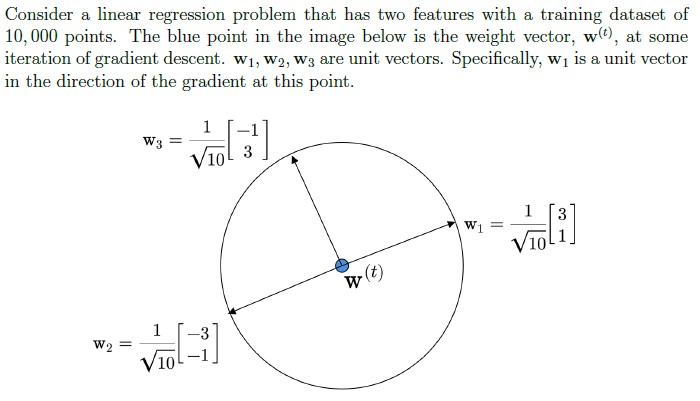
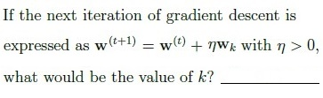
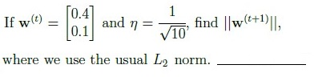
Comprehension passage - the questions below it refer to this
Based on the above data, answer the given subquestions.
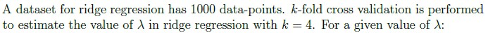
How many models have to be trained?
While training each of these models, how many data-points does the training set have?
Comprehension passage - the questions below it refer to this
Based on the above data, answer the given subquestions.

What kind of a regression problem is this?
- Ridge regression
- LASSO regression
What is the optimal value of w1?
What is the optimal value of w2?
Which of the following statements is true?
- Feature-1 can be discarded.
- Feature-2 can be discarded.
- Any one of the two features can be discarded.
- Both features are equally important and neither of them can be discarded.
Which of the following statements are true? Exactly two options are correct.
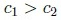
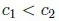
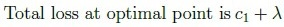
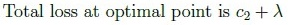
Comprehension passage - the questions below it refer to this
If a and b are integers, answer the given subquestions that follow. Hint: Plotting the dataset helps.
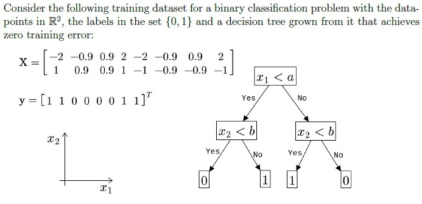
What is the value of a?
What is the value of b?
Find the entropy of the root node. Use log2______________________.
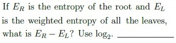
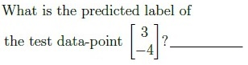
Comprehension passage - the questions below it refer to this
Assume that there is no smoothing. Answer the given subquestions.
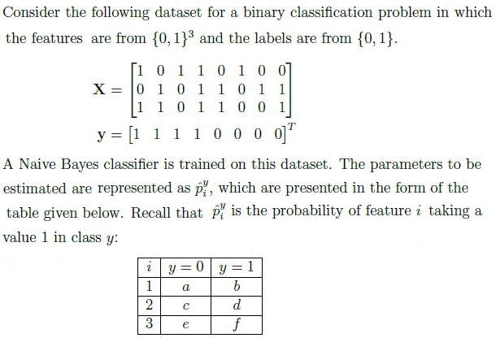
Find the value of c + d.
Find the value of a + c + e.
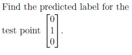
Comprehension passage - the questions below it refer to this
Consider a multi-class classification problem with 3 classes and 4 features, all of which are binary. A generative model is used to model the joint distribution of the features and labels. Based on the above data, answer the given subquestions.Find the total number of independent (free) parameters in the model if the class conditional independence assumption is not enforced.
Find the total number of independent (free) parameters in the model if the class conditional independence assumption is enforced.
Answer key
- Q1 (MSQ, 3 marks): A, B
- Q2 (SA, 3 marks): 0.73
- Q3 (SA, 3 marks): 0.625
- Q4 (SA, 3 marks): 6
- Q5 (SA, 2 marks): 2
- Q6 (SA, 2 marks): 0.1
- Q7 (SA, 1.5 marks): 4
- Q8 (SA, 1.5 marks): 750
- Q9 (MCQ, 1 marks): B
- Q10 (SA, 0.5 marks): 1
- Q11 (SA, 0.5 marks): 0
- Q12 (MCQ, 1 marks): B
- Q13 (MSQ, 2 marks): A, C
- Q14 (SA, 1 marks): 0
- Q15 (SA, 1 marks): 0
- Q16 (SA, 1 marks): 1
- Q17 (SA, 2 marks): 1
- Q18 (SA, 1 marks): 1
- Q19 (SA, 2 marks): 1.25
- Q20 (SA, 2 marks): 1.5
- Q21 (SA, 2 marks): 0
- Q22 (SA, 2 marks): 47
- Q23 (SA, 2 marks): 14